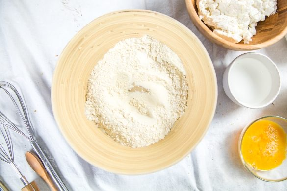
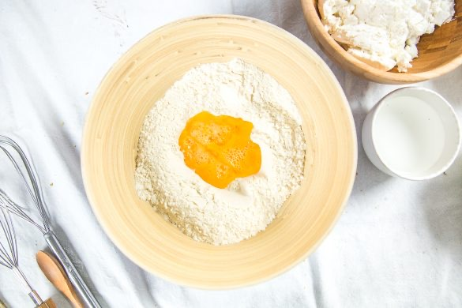
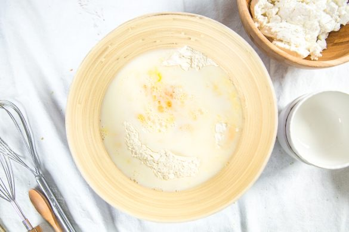
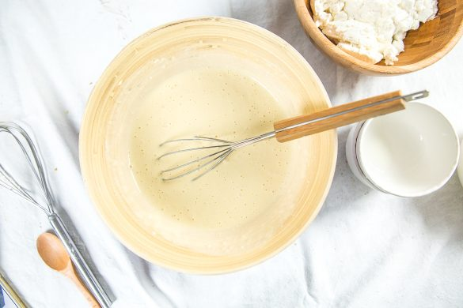
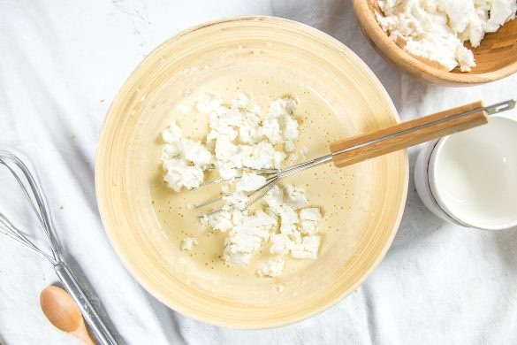
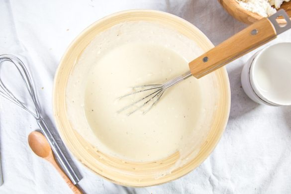
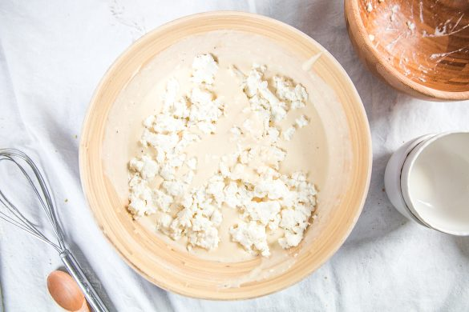
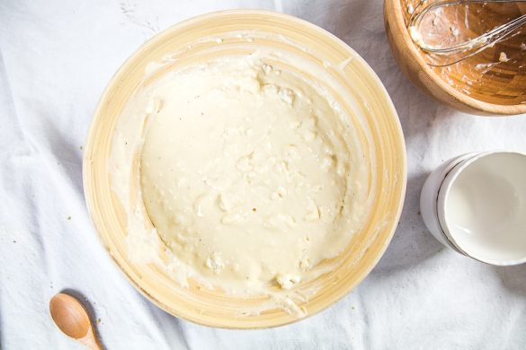

Migliaccioli
Aujourd’hui je vous retrouve avec la fameuse recette qui a fait tant de mystère si vous me suivez un peu la ou la et il s’agit finalement de la recette des Migliaccioli.
Bon je vous l’accorde, la devinette était un peu difficile c’est vrai mais c’est tout de même une spécialité de cette belle île qu’est la Corse et je pensais que peut-être un Corse aurait pu trouver en regardant la photo! Du fromage encore du fromage, si les Corses aiment la charcuterie ils aiment le fromage tout autant et les Migliaccioli en sont la preuve vivante! La seule personne qui s’est approchée de la bonne réponse c’est ma belle-mère qui a au moins su trouver que ça venait de l’île de beauté (et seulement en regardant la photo mais surtout en me connaissant finalement plutôt bien^^). Pour vous expliquer un peu ce que c’est que ces Migliaccioli (qui ressemblent finalement beaucoup à des pancakes, matafan, msemen si je regarde un peu vos réponses), ce sont des petites crêpes au fromage frais (Corse) de brebis qui se dégustent bien chaudes et qui sont vraiment très faciles à faire. Vous pouvez les servir avec un peu de fleur de sel par-dessus accompagnées d’une salade ou comme ici à la manière d’un bon gros brunch avec un peu de miel et quelques amandes grillées c’est vraiment trop trop bon et parfait pour débuter un dimanche matin. J’ai profité de la chandeleur pour renouveler mon expérience cidronomique avec les cidres Val de Rance et accompagner ces petites crêpes de cidre brut et qui s’associe particulièrement bien aux saveurs salées. Je ne sais pas vraiment si le terme de petites crêpes est très juste car au niveau de la texture vu qu’elles sont plutôt épaisses je dirais finalement que ça se rapproche des pancakes en terme de tailles et d’épaisseur (ou de blinis par exemple). Trouver du fromage corse par ici à moins d’aller une épicerie spécialisée c’est un peu compliqué donc vous pouvez prendre n’importe quel fromage frais de brebis et à défaut un fromage frais de chèvre fera aussi bien l’affaire (ne prenez pas de Brocciu par contre). Vous verrez dans la recette que l’on ne mélange pas de façon homogène tout le fromage et c’est ce qui fait que les Migliaccioli sont si bons! Je vous laisse regarder tout ça, j’espère que cette recette vous plaira et je vous dis à très vite 🙂
Ingrédients
- Farine - 300g
- Lait - 200ml
- Eau - 150ml
- Oeufs - 2 gros ou 3 moyens
- Fromage frais de brebis (ou de chèvre si vous ne trouvez pas) - 550g
- Sel - 1 pincée
- Poivre (facultatif) - 1 tour de moulin
Instructions
- Préparez vos ingrédients et battre les œufs dans une petite coupelle
- Dans un saladier, versez la farine
- Faites un puits
- Ajoutez les œufs préalablement battus, l'eau et le lait
- Mélangez à l'aide d'un fouet jusqu'à ce qu'il n'y ai plus du tout de grumeaux
- Séparez le fromage en deux et écrasez la première moitié dans le saladier
- Mélangez de façon à l’incorporer à la pâte de façon homogène
- Laissez reposer la pâte une petite demi-heure
- Émiettez grossièrement l'autre moitié de fromage
- Ajoutez-le à la pâte
- Attention on ne veut pas l'incorporer totalement
- Mélangez doucement avec une cuillère juste de façon à ce qu'il y en ai partout dans la pâte sans le casser
- Cuire dans les Migliaccioli une à une dans une poêle anti-adhésive
- Retournez à mi-cuisson
- Dégustez chaud avec de la fleur de sel accompagné d'une salade ou avec un peu de miel et quelques amandes concassées.








Les tips de la communauté
Bonne réception avec curiosité pour cette recette corse peu connue. Testeurs trouvent la recette facile et gourmande. Quelques demandes de clarifications sur la cuisson et les ingrédients. L'authentité avec fromage frais est bien validée.
Astuces
- Se cuisent comme des crêpes avec huile dans la poêle
- Utiliser un fromage frais (chèvre ou brebis) obligatoirement
- La pâte ne doit pas être trop liquide mais bien flexible
- Huiler la poêle comme pour des crêpes classiques
- Présenter traditionnellement sur des feuilles de châtaigner (si trouvables)
Variantes suggérées
- Garnir avec fromage frais de chèvre au lieu de brebis
- Ajouter du miel après la cuisson
- Servir chaud ou tiède selon préférences
Ajustements signalés
- Utiliser fromage frais uniquement, pas de féta qui changerait complètement la recette